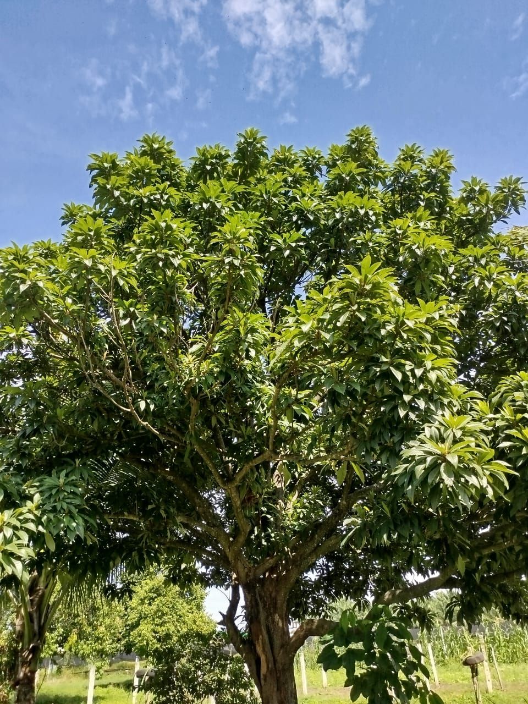
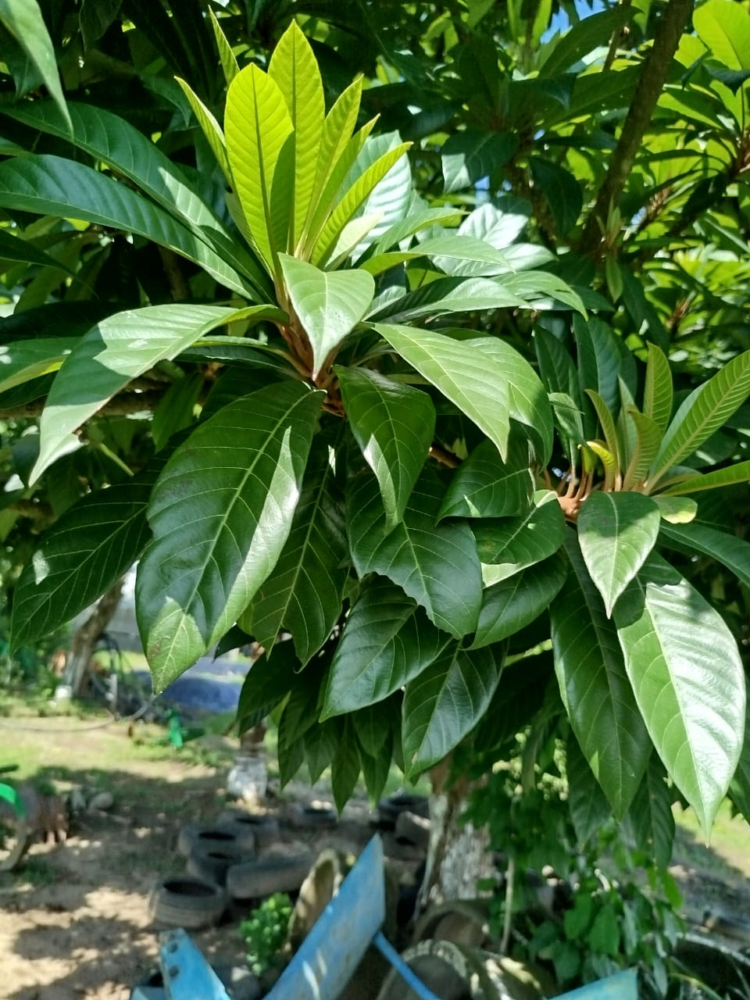

Mamey

📸 Galería del mamey


Nombre científico
Pouteria sapota.
Familia
Sapotaceae
Descripción
es un árbol frutal de clima tropical que puede alcanzar gran altura y desarrollar una copa amplia y frondosa. Su tronco es grueso y resistente, con ramas que sostienen hojas grandes, simples y alargadas, de forma ovalada, bordes lisos y color verde brillante. Sus hojas crecen principalmente en las puntas de las ramas. Su fruto es grande, de forma ovalada, con cáscara café y áspera, pulpa suave de color anaranjado o rojizo y una semilla grande de color oscuro.
Usos
El mamey se utiliza principalmente para la alimentación, ya que su pulpa dulce se consume fresca y se emplea para preparar licuados, helados, aguas frescas y postres. El árbol también se planta para proporcionar sombra y sus frutos tienen valor comercial. En la medicina tradicional se han utilizado algunas partes del árbol, pero sus beneficios medicinales no están suficientemente comprobados. La semilla y otras partes no deben consumirse sin conocer su seguridad.
📍 Lugar donde fue encontrada
Municipio de Huehuetan, Chiapas.